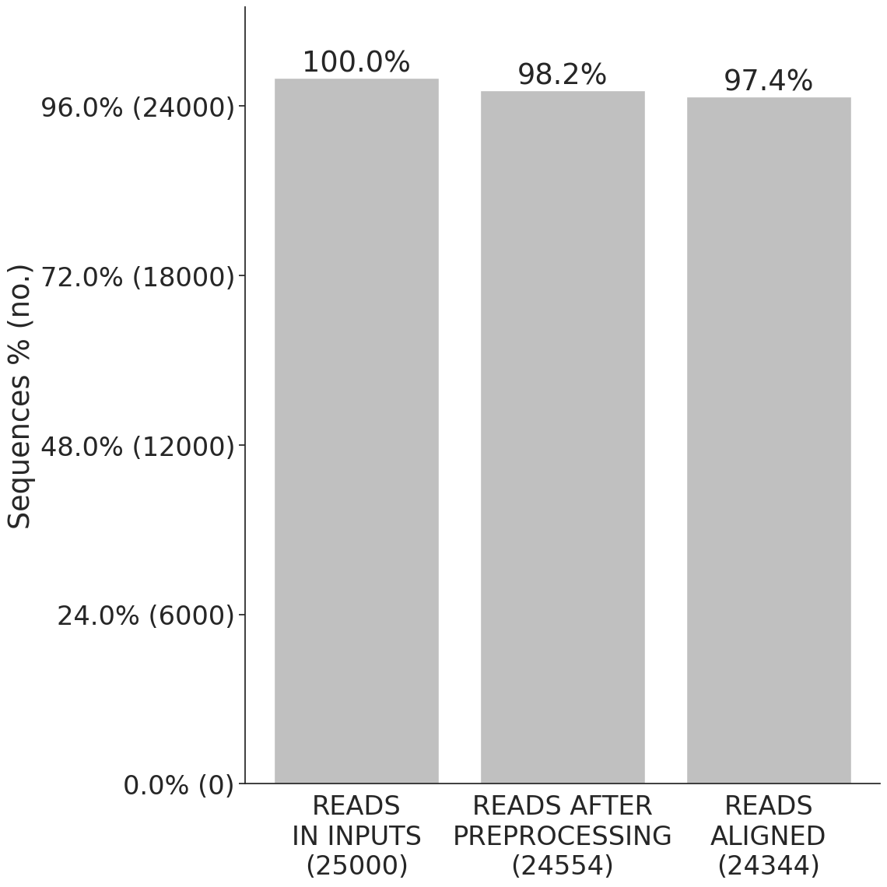

nhej_test
Guardrail Warning! >=1.0% of reads have modifications at the start or end. Total reads: 24344, Irregular reads: 458.
Guardrail Warning! >=0.2% of substitutions were outside of the quantification window. Total substitutions: 9093, Substitutions outside window: 1051.
CRISPResso2 run information

Data: Mapping statistics
CRISPResso version: 2.3.3
Run completed: 2025-08-05 10:00:14
Amplicon sequence:
AATGTCCCCCAATGGGAAGTTCATCTGGCACTGCCCACAGGTGAGGAGGTCATGATCCCCTTCTGGAGCTCCCAACGGGCCGTGGTCTGGTTCATCATCTGTAAGAATGGCTTCAAGAGGCTCGGCTGTGGTT
Command used:
/usr/local/bin/CRISPResso -r1 reads_1.fastq.gz -r2 reads_2.fastq.gz -a AATGTCCCCCAATGGGAAGTTCATCTGGCACTGCCCACAGGTGAGGAGGTCATGATCCCCTTCTGGAGCTCCCAACGGGCCGTGGTCTGGTTCATCATCTGTAAGAATGGCTTCAAGAGGCTCGGCTGTGGTT --name nhej_test --output_folder . --min_average_read_quality 0 --min_single_bp_quality 0
Parameters:
allele_plot_pcts_only_for_assigned_reference: False aln_seed_count: 5 aln_seed_len: 10 aln_seed_min: 2 amplicon_min_alignment_score: amplicon_name: Reference amplicon_seq: AATGTCCCCCAATGGGAAGTTCATCTGGCACTGCCCACAGGTGAGGAGGTCATGATCCCCTTCTGGAGCTCCCAACGGGCCGTGGTCTGGTTCATCATCTGTAAGAATGGCTTCAAGAGGCTCGGCTGTGGTT annotate_wildtype_allele: assign_ambiguous_alignments_to_first_reference: False auto: False bam_chr_loc: bam_input: bam_output: False base_editor_output: False bowtie2_index: coding_seq: config_file: None conversion_nuc_from: C conversion_nuc_to: T crispresso1_mode: False crispresso_merge: False debug: False default_min_aln_score: 60 disable_guardrails: False discard_guide_positions_overhanging_amplicon_edge: False discard_indel_reads: False display_name: dsODN: dump: False exclude_bp_from_left: 15 exclude_bp_from_right: 15 expand_allele_plots_by_quantification: False expand_ambiguous_alignments: False expected_hdr_amplicon_seq: fastp_command: fastp fastp_options_string: fastq_output: False fastq_r1: reads_1.fastq.gz fastq_r2: reads_2.fastq.gz file_prefix: flash_command: None flexiguide_gap_extend_penalty: -2 flexiguide_gap_open_penalty: -20 flexiguide_homology: 80 flexiguide_name: flexiguide_seq: None force_merge_pairs: False guide_name: guide_seq: halt_on_plot_fail: False ignore_deletions: False ignore_insertions: False ignore_substitutions: False keep_intermediate: False max_paired_end_reads_overlap: None max_rows_alleles_around_cut_to_plot: 50 min_average_read_quality: 0 min_bp_quality_or_N: 0 min_frequency_alleles_around_cut_to_plot: 0.2 min_paired_end_reads_overlap: 10 min_single_bp_quality: 0 n_processes: 1 name: nhej_test needleman_wunsch_aln_matrix_loc: EDNAFULL needleman_wunsch_gap_extend: -2 needleman_wunsch_gap_incentive: 1 needleman_wunsch_gap_open: -20 no_rerun: False output_folder: . place_report_in_output_folder: False plot_histogram_outliers: False plot_window_size: 20 prime_editing_gap_extend_penalty: 0 prime_editing_gap_open_penalty: -50 prime_editing_nicking_guide_seq: prime_editing_override_prime_edited_ref_seq: prime_editing_override_sequence_checks: False prime_editing_pegRNA_extension_quantification_window_size: 5 prime_editing_pegRNA_extension_seq: prime_editing_pegRNA_scaffold_min_match_length: 1 prime_editing_pegRNA_scaffold_seq: prime_editing_pegRNA_spacer_seq: quantification_window_center: -3 quantification_window_coordinates: None quantification_window_size: 1 samtools_exclude_flags: 0 save_also_png: False split_interleaved_input: False stringent_flash_merging: False suppress_amplicon_name_truncation: False suppress_plots: False suppress_report: False trim_sequences: False trimmomatic_command: None trimmomatic_options_string: use_legacy_insertion_quantification: False use_matplotlib: False verbosity: 3 write_cleaned_report: False write_detailed_allele_table: False zip_output: False